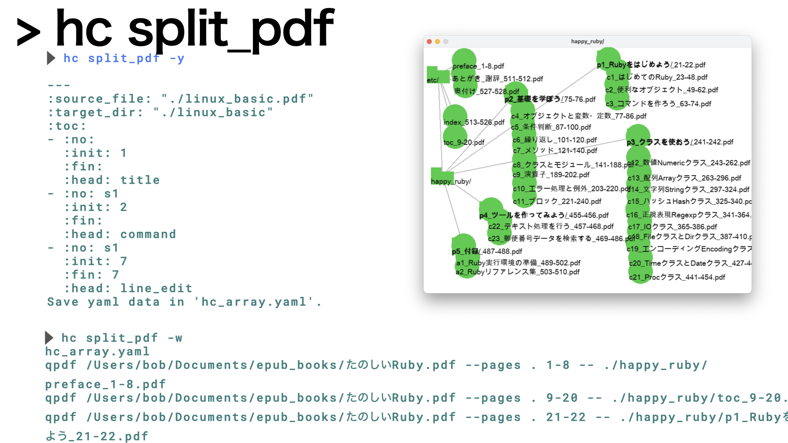

split_pdf
Table of Contents
1. Name
split pdf using YAML
自炊したpdfを読みやすいようにdivideするツールです． conquerしてください．
2. Help
> hc split_pdf -h
Usage: hc [options]
-d, --dir=[DIR] Target directory for mk_yaml (default: .)
-s, --split [YAML] Split pdf wo pages by YAML (default: hc_array.yaml)
-w, --split_with_pages [YAML] Split pdf with pages by YAML (default: hc_array.yaml)
-y, --yaml Output sample YAML
3. Usage
3.1. sample
> hc split_pdf -y --- :source_file: "./linux_basic.pdf" :target_dir: "./linux_basic" :toc: - :no: :init: 1 :fin: :head: title - :no: s1 :init: 2 :fin: :head: command - :no: s1 :init: 7 :fin: 7 :head: line_edit Save yaml data in 'hc_array.yaml'.
3.2. split
> hc split_pdf -w hc_array.yaml qpdf /Users/bob/Documents/epub_books/たのしいRuby.pdf --pages . 1-8 -- ./happy_ruby/preface_1-8.pdf qpdf /Users/bob/Documents/epub_books/たのしいRuby.pdf --pages . 9-20 -- ./happy_ruby/toc_9-20.pdf qpdf /Users/bob/Documents/epub_books/たのしいRuby.pdf --pages . 21-22 -- ./happy_ruby/p1_Rubyをはじめよう_21-22.pdf qpdf /Users/bob/Documents/epub_books/たのしいRuby.pdf --pages . 23-48 -- ./happy_ruby/c1_はじめてのRuby_23-48.pdf qpdf /Users/bob/Documents/epub_books/ ...
3.3. then modify
> hc view
を見ながら整理してください． こんな感じがいいでしょうね．
|  |
| 編集後のview |